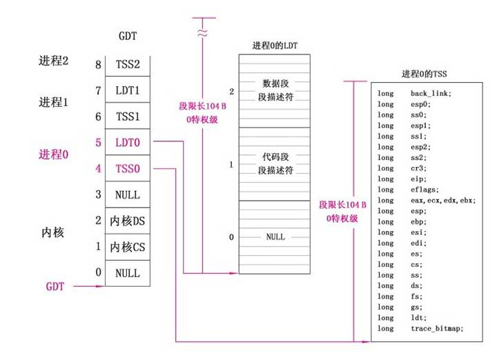
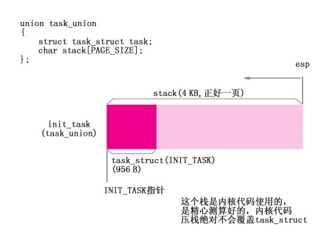

Table of Contents
1 设备环境初始化及激活进程0
1.1 设置根设备,硬盘
bootsect已写入机器系统数据0x901FC的根设备为软盘信息
//代码路径：init/main.c：
……
#define DRIVE_INFO（*（struct drive_info *）0x90080）//硬盘参数表，参看机器系统数据
#define ORIG_ROOT_DEV（*（unsigned short *）0x901FC）//根设备号
……
struct drive_info{char dummy[32]；}drive_info；//存放硬盘参数表的数据结构
void main（void）
{
ROOT _DEV=ORIG_ROOT_DEV；//根据bootsect中写入机器系统数据的信息设置根设备为软盘
drive _info=DRIVE_INFO；//的信息，设置为根设备
……
}
设置根设备为软盘及硬盘参数表完成后数据在内存位置:./img/init_dev_addr.jpg
{kind=link}
1.2 规划物理内存格局,设置缓冲区,虚拟盘,主内存
1.2.1 内核代码和数据占内存空间
1.3 设置虚拟盘空间并初始化
我们设定本书所用计算机有16 MB的内存，有虚拟盘，且将虚拟盘大小设置为2 MB。操作系统从缓冲区的末端起开辟2 MB内存空间设置为虚拟盘，主内存起始位置后移2 MB至虚拟盘的末端
1.4 内存管理结构memmap初始化
系统调用meminit()函数，对主内存区的管理结构进行设置
1.5 初始化块设备请求项结构
linux0.11将外设分两类: 一类是块设备,一类是字符设备.
进程要想与块设备进行沟通,必须经过主机内存的缓冲区,请求项管理结构request[32]就是操作系统管理缓冲区中的缓冲块与块设备上逻辑块之间读写关系的数据结构
作系统根据所有进程读写任务的轻重缓急，决定缓冲块与块设备之间的读写操作，并把需要操作的缓冲块记录在请求项上，得到读写块设备操作指令后，只根据请求项中的记录来决定当前需要处理哪个设备的哪个逻辑块。
1.6 开机启动时间设置
具体执行步骤是：CMOS是主板上的一个小存储芯片，系统通过调用time_init（）函数，先对它上面记录的时间数据进行采集，提取不同等级的时间要素，比如秒（time.tm_sec）、分（time.tm_min）、年（time.tm_year）等，然后对这些要素进行整合，并最终得出开机启动时间（startup_time）
1.7 初始化进程0
进程0是linux操作系统中运行的第一个进程 ,也是linux父子进程创建机制的第一个父进程.
- 系统初始化进程0. 进程0管理结构taskstruct的母本(inittask={INITTASK,}),要将进程0的taskstruct中的LDT，TSS,GDT相挂接,并对GDT，task[64]以及进程调度相关的寄存器进行初始化设置.
- linux0.11作为一个现代操作系统，支持多进程轮流执行,这要求进程具备参与多进程轮询的能力.系统这里对时钟中断进程设置,以便在进程0运行后,为进程0以及后续由它直接,间接创建出的进程能参与轮转奠定基础
- 进程0具备处理系统调用的能力.每个进程运算时都可能需要与内核进行交互，交互端口就是系统调用程序，系统通过函数setsystemgate将syscall与IDT相挂接.这样进程0就具备处理系统调用的能力了.
1.7.1 初始化进程0

进程0的taskstruct由sched.h的INITTASK中定义得出,并用INITTASK指针初始化task[64]的0项  schedinit（）函数接下来用for循环将task[64]除进程0占用的0项外的其余63项清空，同时将GDT的TSS1、LDT1往上的所有表项清零 初始化进程0相关的管理结构的最后一步是非常重要的一步，是将TR寄存器指向TSS0、LDTR寄存器指向LDT0，这样，CPU就能通过TR、LDTR寄存器找到进程0的TSS0、LDT0，也能找到一切和进程0相关的管理信息。